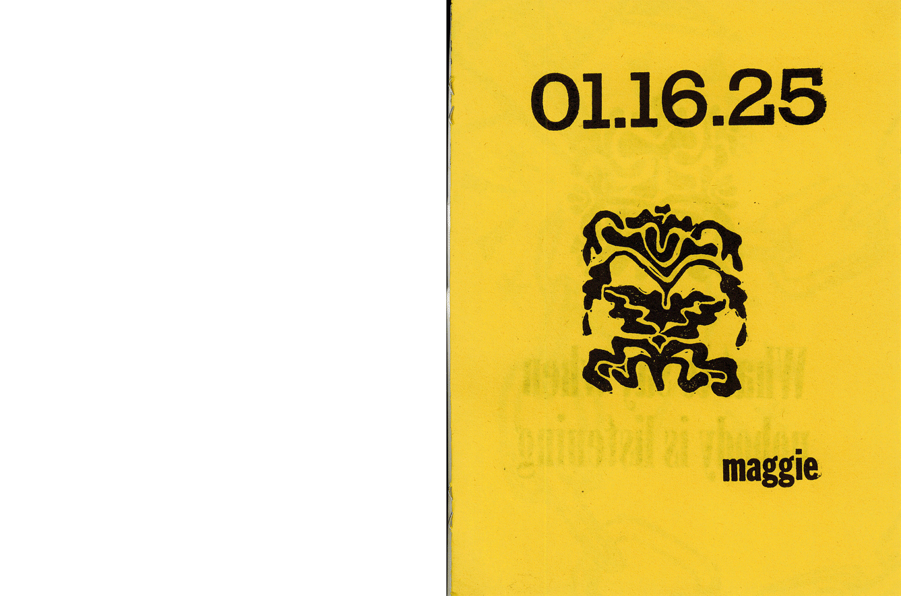
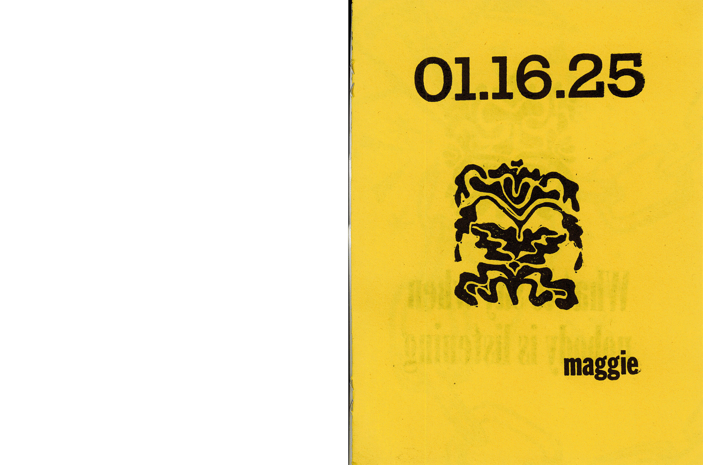

i made this zine on the first week of winter break this year, i type-set this poem/diary entry in lead type and carved all the imagery to make the reduction print images. i did this project as a challenge to test if i could print lead-type and reduction prints on the same pass, there was lots of trial and error but i had a lot of fun and got a beautiful and nostalgic result!


 



i spend a lot of time waxing poetic, i find the mundane excruciatingly beautiful, i write often in a little notebook and glorify the everyday actions that make life wonderful, i find that these words are not enough, it feels important for me to make the words more, elevate them, i need to somehow crush the embarassment of writing a poem about my walk home and on one hand allow it to be less serious and also take on a new life. prose can be elevated through letterpress, illustrator, indesign, and reduction print. i have so much to say but i must hide it behind a franklin gothic veneer and accompany it with imagery that hopefully brings new meaning and keeps you interested.